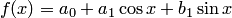
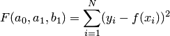
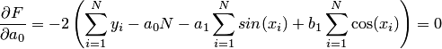
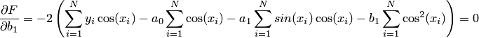
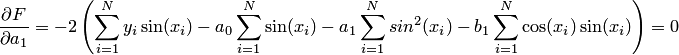
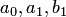

Надо постростоить функцию вида 
такую чтобы сумма квадратов между данными У и в функции была минимальной (это метод наименьших квадратов)
Вопрос такой: как мне сформировать матрицу коэффициентов (помоему она называется матрицей Грамма), решив которую методом Гаусса я получу значения коэффициентов а0, а1, b1.
Первым делом строится функция  . Дальше эта функция минимизируется, т.е. ищется
 В формуле ошибка, вместо + должен быть -


А дальше решаете получившуюся систему линейных уравнений и находите 